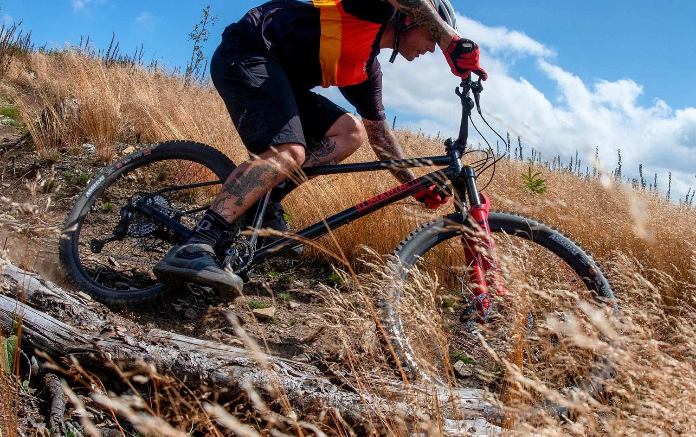

Bike Race Safety Rules
Mountain biking is an inherently risky activity. These Safety Rules are not a guarantee against injury or death to riders, spectators, or others. However, you can significantly reduce your risk by riding with skill and awareness, using high-quality protective gear, maintaining your equipment properly, and reporting unsafe conditions or behaviour to race officials.
Riders are solely responsible for ensuring that their bicycles are fit for competition - capable of withstanding the increased demands of high-speed descents, sudden braking, unpredictable terrain, and close proximity to other competitors. Every bike must be inspected prior to the event, and some races may require a signed Technical Inspection Form.
Participants are reminded that meeting the minimum safety standards does not equal optimal protection. It is strongly recommended that riders use gear-such as helmets, pads, and protective clothing-that exceeds the minimum requirements. Riders competing in more advanced or aggressive categories (e.g., downhill or enduro) are encouraged to wear full-face helmets, back protectors, and other certified safety equipment.
Your safety is a shared responsibility. Take it seriously-for your sake and for everyone else on the trail.
-
Rider Responsibility
- Each rider is expected to:
-
-
Inspect equipment before each race, ensuring:
- Proper brake function (front and rear)
- Securely fastened wheels
- Intact drivetrain and suspension components
-
Be self-reliant, which includes:
- Carrying basic repair tools (e.g., tube, pump, multi-tool)
- Knowing basic first aid procedures
-
Respect all race protocols, which includes:
- Attending pre-race briefings
- Following start procedures and assigned wave times
- Understanding the event course and hazard markings
-
Inspect equipment before each race, ensuring:
-
Equipment & Safety Gear
-
2.1 Helmets
-
Helmets must meet safety certifications:
- CPSC (USA)
- EN1078 (EU)
- ASTM F1952 (Downhill-specific)
-
Helmet must:
- Fit snugly an fasten securely
- Be worn at all times while riding
-
Helmets must meet safety certifications:
-
2.2 Protective Gear
-
Strongly recommended for all riders, mandatory for youth and downhhill events:
- Gloves (full-finger preferred)
- Eye Protection (googgles or glasses)
- Knee and elbow pads
-
For Enduro and Downhill races:
- Full-face helmets are mandatory
- Chest/back protection is recommended
-
Strongly recommended for all riders, mandatory for youth and downhhill events:
-
2.3 Bike Standards
All bikes must:
- Be appropiate for terrain and clas (e.g., hardtail vs full-suspension)
-
Contain no motorized assistance unless:
- The category explicitly allows Class 1 e-MTBs
- E-bikes follow maximum wattage limits (usualy ≤ 250W)
- Pedal-assit only (no throttle)
-
-
Course Conduct
-
3.1 On-Course Behavior
- Stay within marked trail boundaries
-
Yield as follows:
- To emergency vehicles/personnel at all times
- Uphill riders have right-of-way on shared-use trails(non-race days)
- Slower riders must allow overtaking when safe
-
Pohibited behaviors include:
- Cutting switchbacks
- Deliberate obstruction
- Verbal or physical aggression
-
3.2 Passing Protocol
-
Overtaking must be:
- Verbally announced ("Rider on your left!")
- Executed with consideration and adequate space
- Lapped riders must yield at the first safe opportunity
-
Overtaking must be:
-
-
Weather & Environmental Conditions
-
4.1 Race Modifications
The Race Director reserves the righht to:
- Delay or reschedule start times
- alter course segments for safety
-
Cancel an event due to:
- Severe weather (e.g., lightning, hail. extreme heat)
- Hazardous trail conditions (e.g., flooding, lanslides)
-
4.2 Rider Responsibilities in Bad Weather
- Bring appropiate layers and hydratation
- Protect electronic devices and health during rain or cold
- Know hypothermia and heatstroke signs
-
-
Accidents, Crashes & Injuries
-
5.1 Crash Protocol
If a rider on scene must:
-
The first rider on scene must:
- Stop and assess safety
- Notify a marshal or call the emergency number on race plates
- Wait if the injured rider is inmobile or unconscious
-
The first rider on scene must:
-
5.2 Medical Evaluation
-
Any rider who:
- Has sustained a head injury
- Was unconscious
-
Shows signs of serius trama
Must be cleared by medical personnel before coninuing
-
Any rider who:
-
-
Prohibited Substances & Behaviuor
-
6.1 Substance Policy
-
Zero tolerance for:
- Alcohol before or during competition
- Performance-enhancing drugs
- Recreational drug use
-
Zero tolerance for:
-
6.2 Behaviuor Standars
-
Grounds for disqualification include:
- Abusive language
- Disrespectig officials
- Tampering with the course markings
- Littering on the trail
-
Grounds for disqualification include:
-
-
Authoriry of Race Officials
-
Officials may:
- Issue warnings or penalties
- Enforce immediate disqualification
- Remove unsafe riders from the course
- All descisions by the Race Director are final
-
Officials may:
-
Final Acknowledgment
-
By registering, riders agree that:
- They have read, understood, and will comply eith all safety regulations.
- Participation is voluntary, and all inheren risks are accepted
-
By registering, riders agree that: